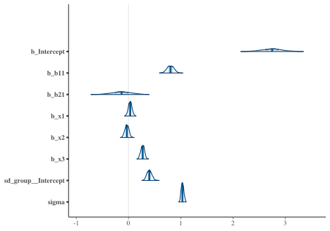
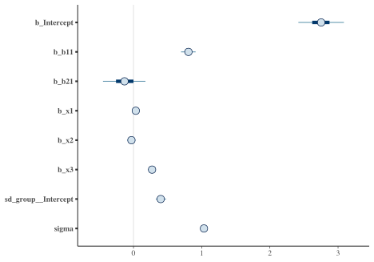
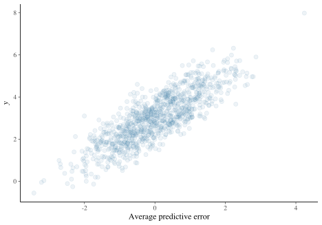
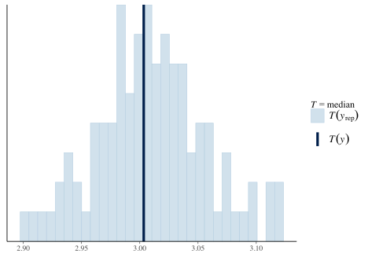
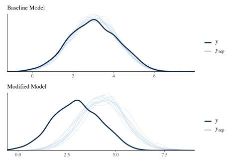

Table of Contents
Better Bayesian Approaches, Part II
We’ve talked about the basics one can do to run a Bayesian model, and what to do if there is a problem, which was the primary goal of Part I. But it might be nice if we could avoid the problems in the first place, and our model might still be inadequate without any warnings. So let’s engage in some better practices to outline an approach you can use every time to help things run more smoothly.
Outline for Better Bayesian Analysis
- First generate ‘fake data’ to assess prior viability
- With adequate priors, start with a simple, but plausible model
- For simple models you do not need many iterations
- If you are doing standard GLM or simpler versions of common extensions, even the defaults are likely overkill. For example, a basic linear regression should converge almost immediately.
- Problems (see Part I)
- If Rhat/ESS is issue, run more iterations
- if
max_treedepthis issue, increase the default - if divergent transitions
- Check the data, has it been scaled?
- Can something more be done about priors?
- Use pairs plot
- Use parcoord plot
- reparameterize model (unlikely if using a higher level package)
- get more/better data (unlikely in practice)
- get a better model
- Issues with loo (see below)
- Use posterior predictive checks
- Nice, but what if it doesn’t fit?
- Get better data (unlikely in practice)
- Get a better model
- Nice, but what if it doesn’t fit?
- Explore a more viable model
- Add interactions
- Add nonlinear relations
- Account for other structure (e.g. random effects)
- Compare and/or average models
We’ll demonstrate each of these steps.
Example data
NEED LINK
As before, I’m going to create some data for us to run some basic models with, the same as Part I. As a reminder, the true underlying model has categorical and continuous covariates, interactions, nonlinear relationships, random effects (observations are clustered in groups), and some variables are collinear.
For our purposes so we’ll create a data frame with the total sample size to 1000.
# create the primary data frame
main_df =
create_data(N = 1000) %>%
as_tibble() %>%
select(group, b1:x3, y) %>%
mutate(
b1 = factor(b1), # will help with visuals
b2 = factor(b2)
)Simulate from priors
A first step is to produce some viable priors. But the obvious question is, what priors should we choose? Thankfully, for standard models there is not much guesswork involved. Bayesian analysis has been around a long time, so the bulk of the work has been done for you. Even default settings should not affect things much, especially for rstanarm, which has some basic defaults that are informed by the data. However, due to the flexibility of the brms modeling functions, some priors are unspecified and left flat (i.e. uniform), which is something we definitely don’t want, and while others like rstanarm’s defaults might be somewhat better, they could still cause problems for more complex situations. So how might we choose better ones?
The basic idea here is to generate parameters (e.g. regression coefficients) based on the prior distributions for those parameters, predict data based on those prior draws, and then compare the predictions to our observed target variable. The brms package makes this very easy to do. We will check the following types of priors.
We can use pp_check to examine the prior-generated data versus the observed target y, but I wait to show them all together at the end.
library(brms)
pr_uniform = prior(uniform(-100, 100), lb = -100, ub = 100, 'b')
model_default_prior = brm(
y ~ b1 + b2 + x1 + x2 + x3,
data = main_df,
iter = 1000,
sample_prior = 'only',
prior = pr_uniform
)
# pp_check(model_default_prior, nsamples = 50)
# diffuse normal for reg
pr_norm_b_0_10 = prior(normal(0, 10), 'b')
model_0_norm_b_0_10 = brm(
y ~ b1 + b2 + x1 + x2 + x3,
data = main_df,
iter = 1000,
sample_prior = 'only',
prior = pr_norm_b_0_10
)
# pp_check(model_0_norm_b_0_10, nsamples = 50)
# rstanarm-like prior
pr_auto = sjstats::auto_prior(
y ~ b1 + b2 + x1 + x2 + x3,
data = main_df,
gaussian = TRUE
)
model_auto_prior = brm(
y ~ b1 + b2 + x1 + x2 + x3,
data = main_df,
iter = 1000,
sample_prior = 'only',
prior = pr_auto
)
# pp_check(model_auto_prior, nsamples = 50)
pr_norm_b_0_1 = prior(normal(0, 1), 'b')
model_0_norm_b_0_1 = brm(
y ~ b1 + b2 + x1 + x2 + x3,
data = main_df,
iter = 1000,
sample_prior = 'only',
prior = pr_norm_b_0_1
)
# pp_check(model_0_norm_b_0_1, nsamples = 50)
pr_norm_b_norm_int = c(
prior(normal(0, 1), class = 'b'),
prior(normal(3, 1), class = 'Intercept')#,
)
model_0_norm_b_0_1_norm_Int = brm(
y ~ b1 + b2 + x1 + x2 + x3,
data = main_df,
iter = 1000,
sample_prior = 'only',
prior = pr_norm_b_norm_int
)
# pp_check(model_0_norm_b_0_1_norm_Int, nsamples = 50)
pr_norm_b_norm_int_t_sigma = c(
prior(normal(0, 1), class = 'b'),
prior(normal(3, 1), class = 'Intercept'),
prior(student_t(10, 1, 1), class = 'sigma')
)
model_0_norm_b_0_1_norm_Int_sigma = brm(
y ~ b1 + b2 + x1 + x2 + x3,
data = main_df,
iter = 1000,
sample_prior = 'only',
prior = pr_norm_b_norm_int_t_sigma
)
# pp_check(model_0_norm_b_0_1_norm_Int, nsamples = 50)The following plot shows the model predictions based on priors only. We restrict the range of values for display purposes, so note that some of the priors would generate more extreme results. For example, the default prior setting could generate values into the \(\pm\) 500 and beyond. I also mark the boundaries of the observed target variable.

So given that our target variable is between -1 and 8, it seems that just adding some basic, data-informed information to our priors resulted in more plausible results. This will generally help our models be more efficient and better behaved. Note that if all else fails, for brms you can use a convenience function like auto_prior demonstrated above.
Run and Summarize the Baseline Model
Now let’s run a baseline model, one that’s simple but plausible. Given that there will eventually be additional complexities, I’ll go ahead and add some iterations, and increase max tree depth and adapt delta now to make the code reusable.
library(brms)
pr = c(
prior(normal(0, 1), class = 'b'),
prior(student_t(10, 1, 1), class = 'sigma'),
prior(student_t(10, 1, 1), class = 'sd') # prior for random intercept std dev
)
model_baseline = brm(
y ~ b1 + b2 + x1 + x2 + x3 + (1 | group),
data = main_df,
warmup = 5000,
iter = 6000,
thin = 4,
prior = pr,
cores = 4,
control = list(
adapt_delta = .95,
max_treedepth = 15
),
save_all_pars = TRUE
)
summary(model_baseline)
Family: gaussian
Links: mu = identity; sigma = identity
Formula: y ~ b1 + b2 + x1 + x2 + x3 + (1 | group)
Data: main_df (Number of observations: 1000)
Samples: 4 chains, each with iter = 6000; warmup = 5000; thin = 4;
total post-warmup samples = 1000
Group-Level Effects:
~group (Number of levels: 100)
Estimate Est.Error l-95% CI u-95% CI Rhat Bulk_ESS Tail_ESS
sd(Intercept) 0.40 0.05 0.31 0.50 1.00 918 993
Population-Level Effects:
Estimate Est.Error l-95% CI u-95% CI Rhat Bulk_ESS Tail_ESS
Intercept 2.75 0.19 2.36 3.13 1.00 1047 1039
b11 0.81 0.07 0.68 0.93 1.00 989 898
b21 -0.13 0.19 -0.49 0.23 1.00 1033 1082
x1 0.03 0.03 -0.03 0.10 1.00 969 1036
x2 -0.03 0.04 -0.10 0.04 1.00 955 923
x3 0.27 0.03 0.21 0.34 1.00 961 988
Family Specific Parameters:
Estimate Est.Error l-95% CI u-95% CI Rhat Bulk_ESS Tail_ESS
sigma 1.03 0.02 0.99 1.08 1.00 1018 1019
Samples were drawn using sampling(NUTS). For each parameter, Bulk_ESS
and Tail_ESS are effective sample size measures, and Rhat is the potential
scale reduction factor on split chains (at convergence, Rhat = 1).For reporting purposes all you need are the Estimate and lower and upper bounds. If you want a visual approach, you can use something like the following types of plots.
mcmc_plot(model_baseline, type = 'areas')
mcmc_plot(model_baseline, type = 'intervals')
The tidybayes package offers some nice options as well.
library(tidybayes)
# get_variables(model_baseline) %>% as_tibble() # to see variable names as required for plotting.
# grab fixed effects - intercept
tidy_plot_data_fe = model_baseline %>%
spread_draws(`^b_(b|x).*`, regex = TRUE) %>%
pivot_longer(b_b11:b_x3, names_to = 'coefficient')
tidy_plot_data_fe %>%
ggplot(aes(y = rev(coefficient), x = value)) +
geom_vline(xintercept = c(-.25, .25), color = 'gray92', size = .5) +
stat_dotsinterval(
aes(fill = stat(abs(x) < .25)),
quantiles = 40,
point_color = '#b2001d',
interval_color = '#b2001d',
interval_alpha = .6
) +
scico::scale_fill_scico_d(begin = .2, end = .6) +
labs(y = '') +
guides(fill = 'none') +
theme_clean()
library(tidybayes)
# get_variables(model_baseline) %>% as_tibble() # to see variable names as required for plotting.
# grab fixed effects - intercept
tidy_plot_data_fe = model_baseline %>%
spread_draws(`^b_(b|x).*`, regex = TRUE) %>%
pivot_longer(b_b11:b_x3, names_to = 'coefficient')
tidy_plot_data_fe %>%
ggplot(aes(y = rev(coefficient), x = value)) +
geom_vline(xintercept = c(-.25, .25), color = 'gray92', size = .5) +
stat_dotsinterval(
aes(fill = stat(abs(x) < .25)),
quantiles = 40,
point_color = '#b2001d',
interval_color = '#b2001d',
interval_alpha = .6
) +
scico::scale_fill_scico_d(begin = .2, end = .6) +
labs(y = '') +
guides(fill = 'none') +
theme_clean()
Check priors
We might still be concerned about how our influential our priors were. So how can we check whether our priors were informative? The following will do a simple check of whether the posterior standard deviation is greater than 10% of the prior standard deviation1. Having an informative prior isn’t really a problem in my opinion, unless it’s more informative than you wanted. For example, shrinkage of a coefficient towards zero will generally help avoid overfitting.
prior_summary(model_baseline)
prior class coef group resp dpar nlpar bound
1 normal(0, 1) b
2 b b11
3 b b21
4 b x1
5 b x2
6 b x3
7 student_t(3, 3, 2.5) Intercept
8 student_t(10, 1, 1) sd
9 sd group
10 sd Intercept group
11 student_t(10, 1, 1) sigma
bayestestR::check_prior(model_baseline)
Parameter Prior_Quality
1 b_Intercept informative
2 b_b11 uninformative
3 b_b21 informative
4 b_x1 uninformative
5 b_x2 uninformative
6 b_x3 uninformativeExplore and visualize effects
We can plot effects easily with brms. The conditional_effects function is what we want here. Without interactions or other things going, on they aren’t very interesting, but it’s a useful tool nonetheless.
conditional_effects(model_baseline, 'b2')
We can also use the hypothesis function to test for specific types of effects. By default they provide a one-sided probability and uncertainty interval. For starters, we can just duplicate what we saw in the previous summary for the b2 effect. The only benefit is to easily obtain the one-sided p-value (that b2 is less than zero) and the corresponding evidence ratio, which is just p/(1-p).
hypothesis(model_baseline, 'b21 < 0')
Hypothesis Tests for class b:
Hypothesis Estimate Est.Error CI.Lower CI.Upper Evid.Ratio Post.Prob Star
1 (b21) < 0 -0.13 0.19 -0.45 0.18 3 0.75
---
'CI': 90%-CI for one-sided and 95%-CI for two-sided hypotheses.
'*': For one-sided hypotheses, the posterior probability exceeds 95%;
for two-sided hypotheses, the value tested against lies outside the 95%-CI.
Posterior probabilities of point hypotheses assume equal prior probabilities.But we can really try anything. The following tests whether the combined effect of our categorical covariates is greater than zero.
hypothesis(model_baseline, 'b11 + abs(b21) > 0')
Hypothesis Tests for class b:
Hypothesis Estimate Est.Error CI.Lower CI.Upper Evid.Ratio Post.Prob Star
1 (b11+abs(b21)) > 0 0.99 0.14 0.79 1.25 Inf 1 *
---
'CI': 90%-CI for one-sided and 95%-CI for two-sided hypotheses.
'*': For one-sided hypotheses, the posterior probability exceeds 95%;
for two-sided hypotheses, the value tested against lies outside the 95%-CI.
Posterior probabilities of point hypotheses assume equal prior probabilities.Model Effectiveness
A natural question to ask is how useful our model actually is. The next question is how to define such utility. Such an assessment definitely cannot be made with something like ‘statistical significance’. Science of any kind is nothing without prediction, so we we can start there.
Posterior predictive checks
Posterior predictive checks are a key component of bayesian analysis. The prior checks we did before are just a special case of this. Here we actually use the posterior distributions of parameters to generate the data to compare what the model implies and what we actually observe. Doing so can give insight to where the model fails.
pp_check(model_baseline, nsamples = 100)
pp_check(model_baseline, nsamples = 10, type ='error_scatter_avg', alpha = .1)
We can look at specific stats. The following suggests our model typically underestimates the maximum value.
pp_check(model_baseline, nsamples = 100, type ='stat', stat='median')
pp_check(model_baseline, nsamples = 100, type ='stat', stat = 'max')
We can define any function to use for our posterior predictive check. The following shows how to examine the 10th and 90th quantiles. Minimum and maximum values are unlikely to be captured well due to their variability, so looking at extreme quantiles might be a better way to assess whether the model captures the tails of a distribution.
q10 = function(y) quantile(y, 0.1)
q90 = function(y) quantile(y, 0.9)
pp_check(model_baseline, nsamples = 100, type ='stat', stat = 'q90')
pp_check(model_baseline, nsamples = 100, type ='stat_2d', stat = c('q10', 'q90'))Bayes R-squared
In this scenario, we can examine the amount of variance accounted for in the target variable by the covariates. I don’t really recommend this beyond linear models assuming a normal distribution for the target, but people like to report it. Conceptually, it is simply a (squared) correlation of fitted values to the observed, so can be seen as descriptive statistic. Since we are Bayesians, we also get a ready-made interval for it, since it is based on the posterior predictive distribution. But to stress the complexity in trying to assess this, in this mixed model we can obtain the result with the random effect included (conditional) or without (unconditional). Both are reasonable ways to express the statistic, but the one including the group effect naturally will be superior, assuming the variance is notable in the first place.
https://avehtari.github.io/bayes_R2/bayes_R2.html
Andrew Gelman, Ben Goodrich, Jonah Gabry, and Aki Vehtari (2018). R-squared for Bayesian regression models. The American Statistician, doi:10.1080/00031305.2018.1549100. Online Preprint.
bayes_R2(model_baseline) # random effects included
Estimate Est.Error Q2.5 Q97.5
R2 0.2766669 0.02207903 0.2316398 0.3162599
bayes_R2(model_baseline, re_formula = NA) # random effects not included
Estimate Est.Error Q2.5 Q97.5
R2 0.1646334 0.01807689 0.1309956 0.1992883
# performance::r2_bayes(model_baseline) # alternative provides bothTo show the limitation of R2, I rerun the model using a restrictive prior on the intercept. Intercepts for the resulting models are different but the other fixed effects are basically the same. The R2 suggests equal fit.
| model | Estimate | Est.Error | Q2.5 | Q97.5 |
|---|---|---|---|---|
| baseline | 0.165 | 0.018 | 0.131 | 0.199 |
| modified | 0.162 | 0.019 | 0.127 | 0.200 |
However, a posterior predictive check shows clearly the failure of the modified model to capture the data.

A variant of R2, the ‘LOO’ R2, is also available via the loo_R2 function. LOO stands for leave-one-out, as in leave-one-out cross-validation. It’s based on the residuals from the leave one out predictions. The results suggests that the LOO R2 actually picks up the difference in models, and would be lower for the modified model, even if we included the random effects.
| model | LOO R2 |
|---|---|
| baseline | 0.156 |
| modified | 0.136 |
Prediction & Model Comparison
In general, a model is judged most by whether it has practical value. Even if we have judged a model effective, there still might be another model that can do better. If we’re doing what we should, we should have a couple models to compare against one another, and the best way to compare them is via prediction, and especially by predicting on data the model wasn’t trained on.
For our purposes, we will add two new models. The first adds interactions, the second adds a nonlinear relationship for one of the variables to that model, and is the closest to the underlying data generating mechanism.
model_interact = update(
model_baseline,
. ~ . + b1:b2 + b2:x1
)
model_interact_nonlin = update(
model_interact,
. ~ . + s(x3),
cores = 4
)Basic prediction
With models in hand, let’s look at your basic predictive capabilities. We can get fitted values which include ‘confidence’ intervals, or predictions, which include ‘prediction’ intervals that include the uncertainty for a new observation. We can specify these as follows. First we create a small data set to make some predictions on.
prediction_data = crossing(
b1 = 0:1,
b2 = 0:1,
x1 = 0,
x2 = 0,
x3 = 0
)
head(fitted(model_baseline))
Estimate Est.Error Q2.5 Q97.5
[1,] 3.080347 0.2936859 2.534775 3.689370
[2,] 3.363565 0.2937595 2.824635 3.983039
[3,] 3.433768 0.2871015 2.907028 4.058239
[4,] 3.931037 0.2923064 3.364752 4.534968
[5,] 2.746472 0.2832111 2.193493 3.326611
[6,] 3.478198 0.2845211 2.938249 4.088640
predict(model_baseline, newdata = prediction_data, re_formula = NA)
Estimate Est.Error Q2.5 Q97.5
[1,] 2.767069 0.9933833 0.8774154 4.721356
[2,] 2.624145 1.0302967 0.6775588 4.759235
[3,] 3.511501 1.0686439 1.4827782 5.642267
[4,] 3.380226 1.0172566 1.3335898 5.322866A better approach is to visualize the predictions. We can do so as we did before. I modify the basic conditional effects plot that brms provides.
conditional_effects(model_baseline, effects = 'x2')
conditional_effects(model_interact, effects = 'x1:b2')
init = conditional_effects(model_interact_nonlin, effects = 'x3', spaghetti = T)
plot(
init,
# points = T, # this (nor rug) argument doesn't really make sense nor is consistent with other options
spaghetti_args = list(colour = alpha('#ff5500', .05)),
line_args = list(colour = alpha('#00aaff', .75)),
theme = theme_clean()
) +
geom_point(aes(x = x3, y = y), data = main_df)
NULL
library(modelr)
main_df %>%
group_by(b2) %>%
data_grid(
x1 = seq_range(x1, n = 101),
b1 = 0,
b2 = factor(0:1),
x2 = 0,
x3 = 0
) %>%
add_fitted_draws(model_interact, n = 100, re_formula = NA) %>%
ggplot(aes(x = x1, color = b2)) +
geom_line(aes(y = .value, group = paste(b2, .draw)), alpha = .1) +
geom_point(aes(y = y), data = main_df, alpha = .25) +
scale_color_brewer(palette = "Dark2")
main_df %>%
group_by(b2) %>%
data_grid(
x3 = seq_range(x3, n = 101),
b1 = 0,
b2 = factor(0:1),
x2 = 0,
x1 = 0
) %>%
add_fitted_draws(model_interact_nonlin, n = 100, re_formula = NA) %>%
ggplot(aes(x = x3)) +
geom_line(aes(y = .value, color = x3, group = paste(b2, .draw)), alpha = .1) +
geom_point(aes(y = y), data = main_df, alpha = .1) +
scico::scale_color_scico() +
theme_clean()
Model Comparisons
Expected predictive accuracy, log probability for observing a new data point
In the Bayesian approach, we will use estimates like WAIC and looic for model comparison. They are essentially used as you would AIC, or root mean squared error, to compare models in a predictive fashion. The values themselves don’t tell us much, but in comparing models, lower means less predictive error, which is what we want. And since we’re bayesian, we even have estimates of uncertainty for these values as well.
With our new models in place, we can now make some comparisons using loo_compare. It shows the ‘best’, i.e. lowest valued, model first followed by the others. The actual value is the total expected log probability for the leave-one-out observations.
model_baseline = add_criterion(model_baseline, 'loo')
model_interact = add_criterion(model_interact, 'loo')
model_interact_nonlin = add_criterion(model_interact_nonlin, 'loo')
loo_compare(
model_baseline,
model_interact,
model_interact_nonlin
)
elpd_diff se_diff
model_interact_nonlin 0.0 0.0
model_interact -42.8 9.3
model_baseline -45.4 9.6 Let’s compare the standard Bayes \(\hat{R}^2\), WAIC, and LOOIC. In this particular setting, all are generally in agreement in the rank order of the models. However, there is no statistical difference in the model \(\hat{R}^2\) between the baseline and interaction models, while both information criteria would more clearly prefer the later.
| model | R2 | Est.Error | Q2.5 | Q97.5 | WAIC | LOOIC |
|---|---|---|---|---|---|---|
| baseline | 0.28 | 0.02 | 0.23 | 0.32 | 2971.60 | 2972.55 |
| interact | 0.28 | 0.02 | 0.24 | 0.33 | 2966.23 | 2967.31 |
| interact_nonlin | 0.35 | 0.02 | 0.30 | 0.39 | 2880.21 | 2881.66 |
Problems at the loo
WAIC vs. LOO. LOO has better diagnostics for noting whether there are potential issues using it. But in practice, how much would it differ?
https://mc-stan.org/loo/articles/loo2-weights.html
issues- overfitting, time, complexity is more accurate portrayal of nature even if not ‘best’
After the model warnings discussed in Part I, the next most common point of confusion I see with clients is with model comparison. Part of the reason is that this is an area of ongoing research and development, and most of the tools and documentation are notably technical. Another reason is that these are not perfect tools. They can fail to show notable problems for models that are definitely misspecified, and flag models that are essentially okay. Sometimes they flag models that other indicators may suggest are better models relatively speaking, which actually isn’t a contradiction, but which may indicate an overfit situation. So what should we do here?
As an example, let’s start with our complex model and get the leave-one-out criterion measure. I will avoid as much technical jargon as possible so that the applied modeler can get on with things. The first part are the stats that are used in the previous model comparison and weighting, particularly the elpd_loo2
The following provides influence statistics, which are a way of saying which observations in the data are not capture well by the model. Larger values are bad, but you don’t even have to worry much here, the function provides the breakdown for you.
loo(model_baseline)
Computed from 1000 by 1000 log-likelihood matrix
Estimate SE
elpd_loo -1486.3 22.1
p_loo 63.7 2.9
looic 2972.5 44.2
------
Monte Carlo SE of elpd_loo is 0.3.
Pareto k diagnostic values:
Count Pct. Min. n_eff
(-Inf, 0.5] (good) 999 99.9% 277
(0.5, 0.7] (ok) 1 0.1% 506
(0.7, 1] (bad) 0 0.0% <NA>
(1, Inf) (very bad) 0 0.0% <NA>
All Pareto k estimates are ok (k < 0.7).
See help('pareto-k-diagnostic') for details.
loo(model_interact_nonlin)
Computed from 1000 by 1000 log-likelihood matrix
Estimate SE
elpd_loo -1441.0 22.2
p_loo 71.5 3.3
looic 2882.1 44.4
------
Monte Carlo SE of elpd_loo is 0.3.
Pareto k diagnostic values:
Count Pct. Min. n_eff
(-Inf, 0.5] (good) 998 99.8% 240
(0.5, 0.7] (ok) 2 0.2% 256
(0.7, 1] (bad) 0 0.0% <NA>
(1, Inf) (very bad) 0 0.0% <NA>
All Pareto k estimates are ok (k < 0.7).
See help('pareto-k-diagnostic') for details.
List of 10
$ estimates : num [1:3, 1:2] -1441.05 71.47 2882.09 22.2 3.31 ...
..- attr(*, "dimnames")=List of 2
.. ..$ : chr [1:3] "elpd_loo" "p_loo" "looic"
.. ..$ : chr [1:2] "Estimate" "SE"
$ pointwise : num [1:1000, 1:5] -1.029 -1.19 -0.959 -0.978 -1.23 ...
..- attr(*, "dimnames")=List of 2
.. ..$ : NULL
.. ..$ : chr [1:5] "elpd_loo" "mcse_elpd_loo" "p_loo" "looic" ...
$ diagnostics:List of 2
..$ pareto_k: num [1:1000] 0.261 0.319 0.299 0.192 0.169 ...
..$ n_eff : num [1:1000] 1077 1009 1009 964 965 ...
$ psis_object: NULL
$ elpd_loo : num -1441
$ p_loo : num 71.5
$ looic : num 2882
$ se_elpd_loo: num 22.2
$ se_p_loo : num 3.31
$ se_looic : num 44.4
- attr(*, "dims")= int [1:2] 1000 1000
- attr(*, "class")= chr [1:3] "psis_loo" "importance_sampling_loo" "loo"
- attr(*, "yhash")= chr "d4a4b4b057a43a8f74230814689ac9517ab29cfd"
- attr(*, "model_name")= chr "model_interact_nonlin"pareto stuff
The usual cases are
- misspecified models MC: all models are misspecified, so how will knowing this help us finish the project?
- models with parameters which see the information only from one observation each (e.g. ‘random’ effect models) MC: sorry, but this is reality for many such models. Assuming we can’t increase this, which is practically every situation, what are we to do about it?
- otherwise flexible models MC: how is ‘flexible’ defined? Overly vague priors?
- A quick note what I infer from p_loo and Pareto km values
- Recommendations for what to do when k exceeds 0.5 in the loo package?
- Improve model with some observations Pareto >0.7
- Bayesian data analysis - roaches cross-validation demo
- 16 What to do if I have many high Pareto k’s?
- Pareto K for outlier detection 1
These measures are not independent. If there are many high Pareto k values as in case of model 4, then elpd_loo (or looic) can’t be trusted. Even if there would be no high Pareto k values, R^2 can’t be trusted if p_loo is relatively high compared to the total number of parameters or the number of observations as in case of model 2-4. So there is no contradiction here, but you need to take into account if diagnostics tell you that some other measures can’t be used. ~ Aki Vehtari
Averaging models
With the previous statistics for model comparison we can obtain relative model weights, using the model_weights function. This essentially spreads the total probability of the models across all those being compared. These weights in turn allow us to obtain (weighted) average predictions. The key idea being that we do not select a ‘best’ model, but rather combine their results for predictive purposes.
We can start by comparing the first two models. Adding the interactions helped, and comparing the weights suggests that it would be contributing most to averaged predictions.
model_baseline model_interact
0.08655953 0.91344047 If we compare the baseline to our most complex model, almost the entirety of the weight is placed on the latter.
model_weights(model_baseline, model_interact_nonlin)
model_baseline model_interact_nonlin
9.060044e-07 9.999991e-01 Now we compare all three, with roughly the same conclusion.
| model_baseline | model_interact | model_interact_nonlin |
|---|---|---|
| 0 | 1e-05 | 0.99999 |
Now what about those average predictions? Let’s create a data frame that sets the continuous covariates at their means, and at each level of the categorical covariates. We then will make average predictions for those observations using pp_average.
prediction_data = crossing(
b1 = 0:1,
b2 = 0:1,
x1 = 0,
x2 = 0,
x3 = 0
)
average_predictions = pp_average(
model_baseline,
model_interact,
model_interact_nonlin,
newdata = prediction_data,
re_formula = NA
)| b1 | b2 | x1 | x2 | x3 | Estimate | Est.Error | Q2.5 | Q97.5 |
|---|---|---|---|---|---|---|---|---|
| 0 | 0 | 0 | 0 | 0 | 2.829 | 1.015 | 0.825 | 4.723 |
| 0 | 1 | 0 | 0 | 0 | 2.380 | 0.958 | 0.487 | 4.086 |
| 1 | 0 | 0 | 0 | 0 | 3.016 | 1.042 | 0.921 | 5.047 |
| 1 | 1 | 0 | 0 | 0 | 3.089 | 0.969 | 1.054 | 4.928 |
Cross-validation
library(future)
plan(multiprocess)
model_interact_nonlin_cv = kfold(model_interact_nonlin, K = 5, chains = 1, save_fits = TRUE)
plan(sequential)
str(model_interact_nonlin_cv, 0)
test = kfold_predict(model_interact_nonlin_cv, newdata = prediction_data)
rmse <- function(y, yrep) {
yrep_mean <- colMeans(yrep)
sqrt(mean((yrep_mean - y)^2))
}
rmse(y = test$y, yrep = test$yrep)Solutions and their problems
It seems that the ‘usual’ approach is adding a level of complexity that is going well beyond what should be expected for new/applied users. While some might actually enjoy such complexity (like me!), this turns applied users off, especially if there is no obvious gain over traditional approaches.
Increasing adapt_delta seems to often does not solve the problem for which it is suggested (based on personal experience it’s actually rare). I usually start at .99 anyway just to make it a non-issue. For applied users, having to deal with ‘control’ options usually shouldn’t be a first step, especially if it’s not likely to improve things. For example, would trying a simpler model for diagnostic purposes, or rescaling the data, be just as likely to improve things?
Reparameterization/Change of variables - Only those with notably advanced statistical knowledge would even know where to begin here.
‘Finding a better model’ isn’t usually helpful even if 100% accurate for every modeling situation. Unless the advice is specific (e.g. to add an additional specific covariate, change a specific distribution, add some other complexity), it’s likely not going to help an applied user.
‘Try different priors’ Which and by how does one determine ‘different’? For many regression situations, normal(0, 1) vs. normal(0, 10) vs. student(df = X) would result in basically wasted time. Is there a way to make a reasonable guess as to what should be tested to demonstrate sensitivity/improvement?
The model comparison situation has grown so complex there is a 20+ item FAQ that still may not help in many cases. What is someone to do if there are ‘pareto issues’ and they have no other obvious modeling options? Abandon model comparison?
Resources
https://mc-stan.org/docs/2_24/stan-users-guide/problematic-posteriors-chapter.html
Vehtari, A., Gelman, A., and Gabry, J. (2017a). Practical Bayesian model evaluation using leave-one-out cross-validation and WAIC. Statistics and Computing. 27(5), 1413–1432. doi:10.1007/s11222-016-9696-4 (journal version, preprint arXiv:1507.04544).
Yao, Y., Vehtari, A., Simpson, D., and Gelman, A. (2018) Using stacking to average Bayesian predictive distributions. Bayesian Analysis, advance publication, doi:10.1214/17-BA1091. (online).
Vehtari, A., Simpson, D., Gelman, A., Yao, Y., and Gabry, J. (2019). Pareto smoothed importance sampling. preprint arXiv:1507.02646
Gabry, J. , Simpson, D. , Vehtari, A. , Betancourt, M. and Gelman, A. (2019), Visualization in Bayesian workflow. J. R. Stat. Soc. A, 182: 389-402. doi:10.1111/rssa.12378. (journal version, arXiv preprint, code on GitHub)
Aki Vehtari’s A quick note what I infer from p_loo and Pareto k values
https://github.com/stan-dev/stan/wiki/Prior-Choice-Recommendations
https://mc-stan.org/docs/2_24/reference-manual/divergent-transitions.html
https://discourse.mc-stan.org/t/divergent-transitions-a-primer/17099
https://mc-stan.org/docs/2_24/reference-manual/effective-sample-size-section.html
https://mc-stan.org/bayesplot/articles/visual-mcmc-diagnostics.html
- Jeffrey Arnold’s Bayesian Notes has nice examples of many models and good summaries otherwise
In the same post, as a comment, Daniel Lakeland proposes an alternative approach is whether the posterior estimate falls within the 95% highest density interval of the prior. This is available via the method argument:
bayestestR::check_prior(model_baseline, method = 'lakeland').↩︎The
looicis just -2elpd_loo, as we often use -2log likelihood (a.k.a. deviance) in standard approaches for AIC. In this case,elpd_loo, is a leave-one-out density.p_loois the ‘effective number of parameters’, which users of penalized regression and mixed models will have some familiarity with.↩︎